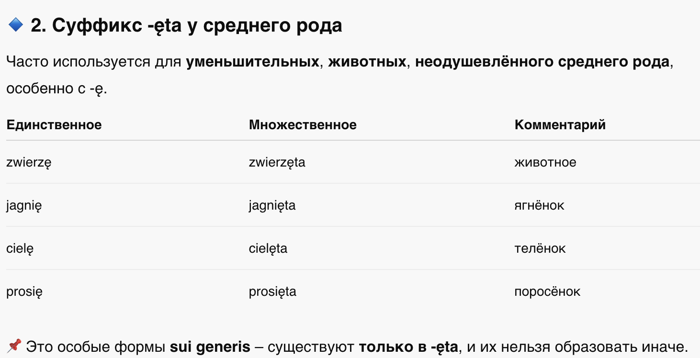
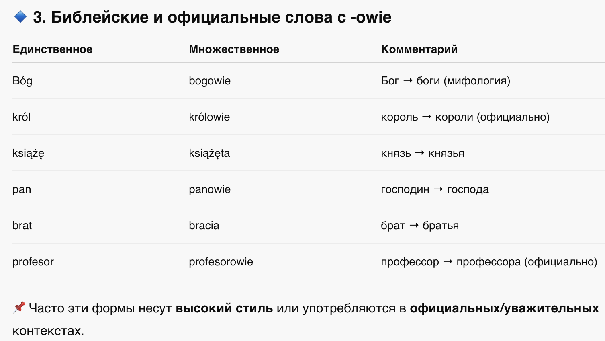
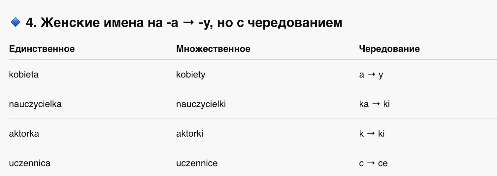
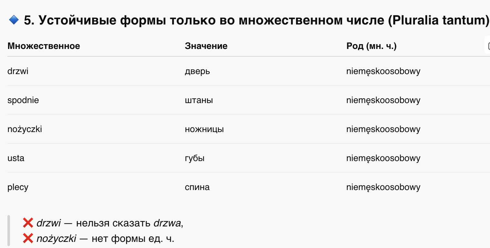
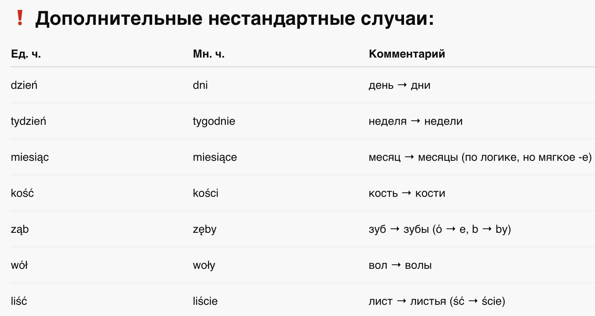
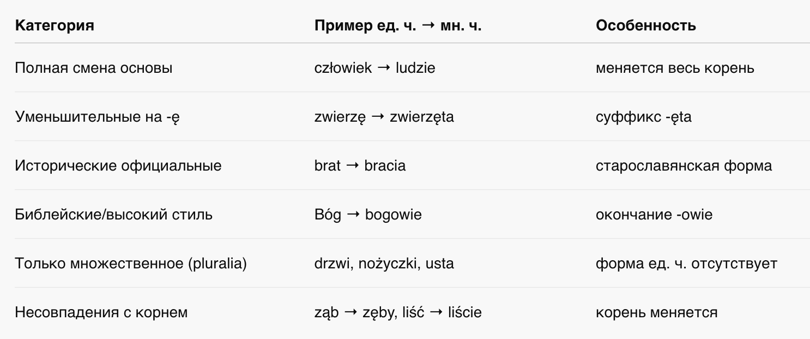
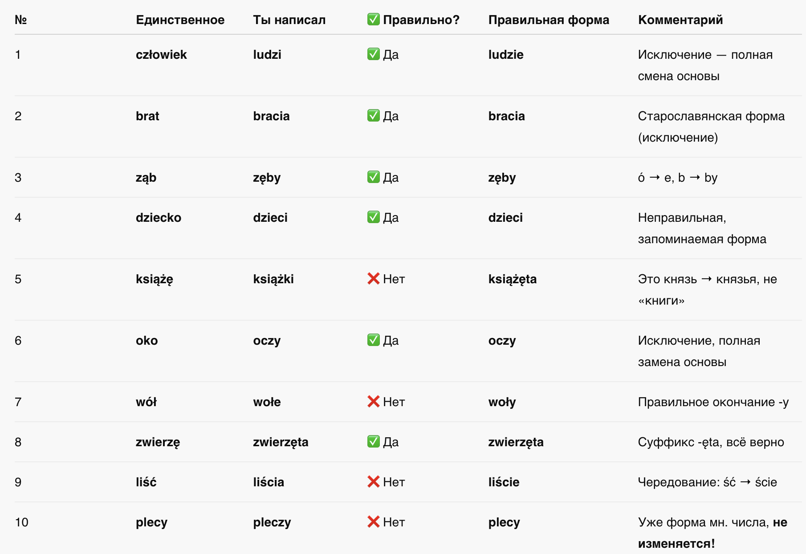

📘 Глава 7: Нерегулярные формы и исключения во множественном числе
🚫 Formy nieregularne i wyjątki
1. Что такое «нерегулярные формы»?
2. Категории исключений:
3. Таблица: обзор исключений и изменений
4. Как учить эти формы?
📍 Что такое «нерегулярные формы»?
Это такие существительные, у которых:
- изменяется основа слова,
- форма множественного числа никак не выводится по стандартной схеме,
- иногда появляется новая форма из исторической парадигмы.
📌 Такие слова нужно запоминать как есть, потому что они являются:
- наследием старопольского и праславянского языка,
- частью ежедневного употребления,
- или лексически устойчивыми (вроде dzieci, ludzie).
📚 2. Категории исключений:






📊 3. Таблица: обзор исключений и изменений

🧠 4. Как учить эти формы?
- ✅ Составь себе списки по категориям
- ✅ Используй карточки (Quizlet / Anki)
- ✅ Повторяй в контексте (предложения)
- ✅ Разделяй визуально: «могу образовать» VS «нужно запомнить»
